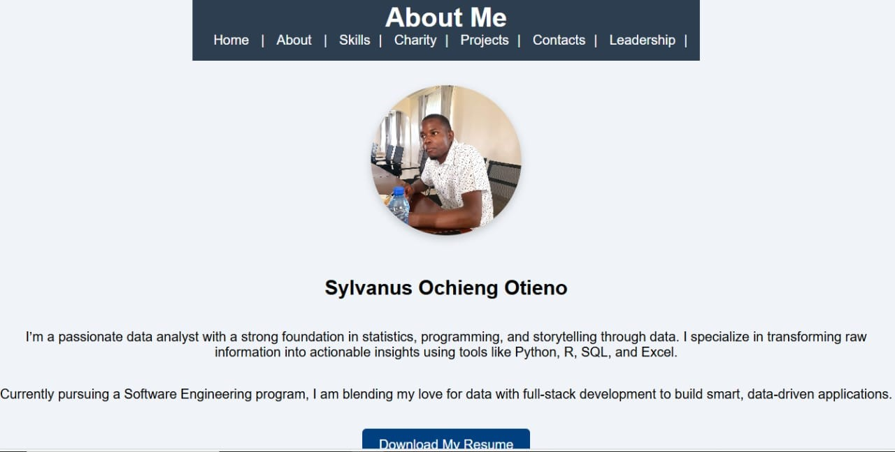

Sales Dashboard
Interactive retail sales dashboard developed using Excel and Power BI to uncover trends, performance metrics, and insights.
View on GitHubEmployee Attendance Tracker
Cleaned and transformed raw Excel data into an interactive attendance and performance tracker using formulas, charts, and conditional formatting.
View on GitHub
Covid-19 Data Analysis
Analyzed global Covid-19 data using R and created informative visualizations with ggplot2 to communicate trends and impacts.
View on GitHub

General Data Analysis Portfolio
A collection of projects involving data cleaning, visualization, and interpretation using Excel, Python, Power BI, and other tools.
Visit Netlify